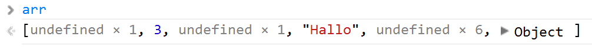

JavaScript
the languageHistory
Once upon a time, the most geeky thing was to have something like
alert("Hi, welcome to my homepage!");


ECMAScript
name of the language; JavaScript is a dialect, like JScript or ActionScript

Syntax
function everything() {
var x = {a:10}, y=[1,2], z = function() { };
for(var p in x){
lbl: for(var i=0; i<10; i++){
switch(x[p]) {
case 0: continue; default: break lbl;
}
}
if(x instanceof String || 'a' in x) delete x.a;
}
while(typeof true){
if(void false){
thix.x = 3 / (-this.f()) ? /foo/g : new String("hello");
}else{
do { try { throw 3; } catch(e) { debugger; return; } finally {}}
while(false);
}
}
}
Primitives
x = 1
x = "Hello"
x = true
var x = 15,
y = 0.65,
z = 3.14e1045;
console.log(y.toFixed()); //prints 1
var aNumber = new Number("3");
console.log(aNumber.valueOf()); //prints 3
parseInt("3"); parseFloat("3.1");
var x = "hello, world!",
y = 'hello, world!',
z = "Hello ' world!",
w = 'Hello " world!';
t = new String("Hello, World");
x.substring(7,x.length-1); //world
var x = true;
x = new Boolean(true);
x = new Boolean(false);
x = new Boolean(1);
x = new Boolean(0);
x = new Boolean("false");
x.valueOf(); //true !!!!!
var x = 15;
x = "hello, world!";
x = true;
Attention!
var x = 3;
var y = 3;
console.log(x === y); //true -> comparison by copy
var x = 3;
var z = new Number("3");
console.log(x === z); //false -> comparison by reference
console.log(x === z.valueOf()); //true
undefined null
var x;
console.log(x); //prints undefined
var myFunc = function(){
console.log("hallo");
}
//returns undefined, not null!
var returnValue = myFunc();
var x;
if(x){
console.log("x is defined");
}else{
console.log("x is undefined");
}
if(x === undefined) { ... }
var valOrDefault = aPerson.address || { nation: "Italy" };
address.nation || (address.nation = { name: "Italy" });
Custom objects
var x = {};
x.firstname = "Juri";
x.age = 27;
x["firstname"] = "Juri";
x["age"] = 27;
x = {
firstname: "Juri",
age: 27,
display: function() { ... }
};
x["space property"] = "Hi there!";
//x.space property doesn't work!
Prototype
var x = {};
console.log(x.toString()); //prints [object Object] ??

What for?
Reuse, Inheritance
Prototype Chain:

Inheritance Patterns
Prototypal Inheritance Sample

var Animal = function(name){
this.name = name;
};
Animal.prototype.makeSound = function(){
console.log(this.name + ": " + (this.sound || "(bo)"));
};
Animal.prototype.doEat = function(){
console.log("Eat what?");
};
var Mammal = function(name){
//call base class
Animal.call(this, name);
};
//inheritance: linking in the prototype chain
Mammal.prototype = new Animal();
Mammal.prototype.constructor = Mammal;
Mammal.prototype.warmBlooded = function(){
console.log("Sure! " + this.name + " is warm blooded!");
};
Mammal.prototype.doEat = function(){
console.log("Mammals such as " + this.name + " like to eat meat!");
};
var Bird = function(name){
Animal.call(this, name);
this.sound = "cip cip cip";
};
Bird.prototype = new Animal();
Bird.prototype.constructor = Bird;
Bird.prototype.canFly = function(){
console.log("I think so");
};
Bird.prototype.doEat = function(){
console.log("Birds eat mostly grains.");
};
var Parrot = function(name){
Bird.call(this, name);
this.sound = "Hellooo";
};
Parrot.prototype = new Bird();
Parrot.prototype.constructor = Parrot;
var Cat = function(name){
Mammal.call(this, name);
this.sound = "miao";
};
Cat.prototype = new Mammal();
Cat.prototype.constructor = Cat;
Cat.prototype.doEat = function(){
console.log(this.name + " likes milk!");
};
var Dog = function(name){
Mammal.call(this, name);
this.sound = "wuff";
};
Dog.prototype = new Mammal();
Dog.prototype.constructor = Dog
Usage...
var dog = new Dog("Bello");
dog.makeSound();
dog.warmBlooded();
var cat = new Cat("Mietze");
cat.makeSound();
var bird = new Bird("Hansi");
bird.makeSound();
var parrot = new Parrot("Parrot");
parrot.makeSound();
//----
bird.doEat();
cat.doEat();
dog.doEat();
Here's a live example.
Object.create()
var anAnimal = {
name: "(unknown)",
makeSound: function(){
console.log(this.name + ": " + (this.sound || "(bo)"));
},
doEat: function(){
console.log("Eat what?");
}
};
// supposing aMammal already links to anAnimal, the creation of
// a dog would look like
var aDog = Object.create(aMammal, {
sound: { value: "wuff" }
});
var bello = Object.create(aDog, { name: { value: "Bello" }});
Let's switch over to a more concrete example.
This is pure Object Inheritance
Classical Inheritance
Trying to obfuscate the prototype mechanism and making it more like normal/classical inheritance
var Animal = Class.extend({
init: function(name){
this.name = name;
},
makeSound: function(){
console.log(this.name + ": " + (this.sound || "(bo)"));
},
doEat: function(){
console.log("Eat what?");
}
});
var Mammal = Animal.extend({
init: function(name){
this._super(name);
},
warmBlooded: function(){
console.log("Sure! " + this.name + " is warm blooded!");
},
doEat: function(){
console.log("Mammals such as " + this.name + " like to eat meat!");
}
});
live
Instance Operators
var bello = new Dog("Bello");
bello instanceof Dog; //true
var bello = Object.create(aDog, { name: { value: "Bello" }});
aDog.isPrototypeOf(bello); //true
var dog = {
get name() { return this._name; },
set name(v) { this._name = v; }
};
dog.name = "Bello";
console.log(dog.name); //prints "Bello"

Object.defineProperty(...);
Live
Functions
..are objects:
function test (param1, param2) { ... }
var test = function (param1, param2) { ... }
var test = function test (param1, param2) { ... }
Can be passed around..
function logWrapper(func) {
return function() {
console.log("Before");
var result = func.apply(this, arguments);
console.log("After with result: " + result);
return result;
}
}
var result = logWrapper(function(a,b) { return a+b; });
result(3,2); //call the wrapped function
live
arguments
var foo = function(a, b, c){
console.log(arguments.length); //prints # function params
console.log(arguments[0]); //read first argument (a)
// points to foo(); recursive invocation
// (WARN: not supported in ES5 with strict mode)
arguments.callee();
};
this
var person = {
name: "John",
printName: function(){
console.log(this.name);
}
};
person.printName(); //prints "John"
Live
apply & call
var anotherPerson = {
name: "Jack"
};
var printNameFunc = person.printName;
printNameFunc.call(anotherPerson);
//difference call and apply
printNameFunc.call(anotherPerson, param1, param2)
printNameFunc.apply(anotherPerson, [param1, param2])
Live
Scope
...in C#/Java
string test = "hallo";
{
string anotherTest = "world";
}
test = anotherTest; //compiler error
In JavaScript it works -> function scope not block scope
Scope in JavaScript
(function(){
var x = 1;
console.log(x);
})();
console.log(x); //x is undefined
Live
Module Pattern
Isolating...
(function($, exports){
//get jQuery mapped to $
//use exports to export functions and
//variables to the outside
})(jQuery, window);
Example
var myObj = {};
(function(data, exp){
var multi = function(){
return data * 2;
};
exp.compute = function(val){
return val + multi();
};
}(3, myObj));
Live
Closures
var f = function(){
var x = 1;
return function(){
console.log(x);
};
};
var printFunc = f();
printFunc(); //prints 1
Live
"Hoisting"
What will be printed?
var foo = 1;
function bar() {
if (!foo) {
var foo = 10;
}
console.log(foo);
}
bar();
Live
Transformed to...
var foo = 1;
function bar() {
var foo;
if (!foo) {
foo = 10;
}
console.log(foo);
}
bar();
Article
Live
Therefore...
Declare all variables at the beginning of their scope
function test(){
var x,
y = 0,
nums = [1,2,3,4,5];
//exception: loops..they read better this way
for(var i=0; i<nums; i++) { ... }
...
}
Nasty Loops
//wrong sample
var people = [
{ id: 1, name: "Juri"; },
{ id: 2, name: "Simon" },
{ id: 3, name: "Peter" }];
for(var i=0, len=people.length; i<len; i++){
var $li = $("<li>" + people[i].name + "</li>");
$li.click(function(){
alert("You clicked on " + people[i].name);
});
$("#people").append($li);
}
Live (wrong)Live (correct)
Maintaining Context
model.save(function(){
this._someLocalVariable = ...
//not accessible as this points to
//the model
});
this.callback(...)
model.save(this.callback(function(){
this._someLocalVariable = ...
//not accessible as this points to
//the model
}));
Live (incorrect)Live (working)
...in its simplest implementation..
callback = function(func){
var self = this;
return (function(){
return func.apply(self, arguments);
});
};
Normally called: proxy
proxy: function( fn, context ) {
var tmp, args, proxy;
if ( typeof context === "string" ) {
tmp = fn[ context ];
context = fn;
fn = tmp;
}
// Quick check to determine if target is callable, in the spec
// this throws a TypeError, but we will just return undefined.
if ( !jQuery.isFunction( fn ) ) {
return undefined;
}
// Simulated bind
args = core_slice.call( arguments, 2 );
proxy = function() {
return fn.apply( context, args.concat( core_slice.call( arguments ) ) );
};
// Set the guid of unique handler to the same of original handler, so it can be removed
proxy.guid = fn.guid = fn.guid || proxy.guid || jQuery.guid++;
return proxy;
},
Exceptions
6 core error constructors
- - EvalError
- - RangeError
- - ReferenceError
- - SyntaxError
- - TypeError
- - URIError
Custom Exceptions
function NotNumberException() {
this.name = "NotNumberException";
}
function NotPositiveNumberException(message) {
this.name = "NotPositiveNumberException";
this.message = message;
}
live
Some gimmicks
Object Property/for-in Loop
for(var p in obj){
//if(obj.hasOwnProperty(p)) {
console.log(obj[p]);
//}
}
(Note: don't use it to iterate over arrays!)
LiveArrays
var arr1 = new Array(),
arr2 = [];
//most common operations
//(results, always starting from this array)
var arr = [1,2,3,4,5];
arr.join(";"); //"1;2;3;4;5"
arr.slice(2,4); //[3,4]
arr.push(6); //[1,2,3,4,5,6];
arr.pop(); //6 -> [1,2,3,4,5]
arr.shift(); //1 -> [2,3,4,5]
arr.reverse(); //[5,4,3,2,1]
var arr = [5,1,4,3,2];
arr.sort(function(a,b){
if (a < b)
return -1;
if (a > b)
return 1;
// a must be equal to b
return 0;
});
console.log(arr); //[1,2,3,4,5]
Live
The most common array operations
pop() push() reverse() shift() sort() splice() shift() unshift() sort() concat() join() slice()We're in a dynamic world...
..so obviously, arrays can contain different "types"
//also note the indices I'm using..
var arr = [];
arr[1] = 3;
arr[3] = "Hallo";
arr[10] = { name: "Juri" };

Regex Fun
var regex = /[0-9]/g,
text = "Test1234";
var matches = text.match(regex);
console.log(matches); //prints ["1", "2", "3", "4"]
Live
Efficient JavaScript
Don't use eval
eval("alert('test')")
attention to globals...
x = 3;

for-in loops are
s...l...o...w
var arr = [1,2,3,4,5];
var sum = 0;
//slow
for(var i in arr){
sum += arr[i];
}
//fast
for(var i=0, len=arr.length; i<len; i++){
sum += arr[i];
}
String manipulations
use new String("...");
//slow
var s = "abcdefgh";
for (var i=0; i<s.length; i++){
s.charAt(i);
}
//fast
var s = new String("abcdefgh");
for (var i=0; i<s.length; i++){
s.charAt(i);
}
(Attention: s[1] would work in most browsers, but not IE!!)
{......}
//this
return {
...
};
//instead of
return
{
...
};
In JavaScript this might make a difference! Automatic Semicolon Insertion
function createPerson(firstname) {
return
{
firstname: first
};
}
var p = createPerson("Juri");
console.log(p.firstname); //error! why?
Live
jQuery Performance tipps
Selector Speed
$("#element, form, input"); //fastest
$(".js-someelement"); //slower
//slowest
$(":visible, :hidden");
$("[attribute=value]");
Parent - Child Relationsships: Restrict
From fastest to slowests
$parent.find(".child"); //fastest
$(".child", $parent); //~5-10% slower
$("#parent").find(".child"); //~16% slower
$(".child, $("#parent")); //~23% slower
$parent.children(".child"); //~50% slower
$("#parent > .child"); //~70% slower
$("#parent .child"); //~77% slower
jsPerf tests
Caching and Chaining
storing for later reuse
//use cached selectors
var parents = $(".parents"),
children = $(".parents").find(".child"), //bad
kids = parents.find(".child"); //use cached selector
//chain
$("#form").submit(function(el, ev){
el.addClass("inprogress")
.removeClass("editable")
.fadeOut(500);
});
jsPerf tests
Dom Manipulations are slow!
//first create in memory
var $toAttach = $("<div>")
.addClass("full")
.append("<input type='text'/>");
$("#parent").append($toAttach);
jQuery.detach()
"Parallelize" Ajax Calls
$.ajax({
...
success: function(result1){
$.ajax({
...
success: function(result2){
this._renderView(result1, result2);
}
});
}
});
Deferreds
var call1 = $.ajax({ url: ... });
var call2 = $.ajax({ url: ... });
$.when(call1, call2).done(function(resp1, resp2){
//use response data
});
Live
Use a spacebar or arrow keys to navigate